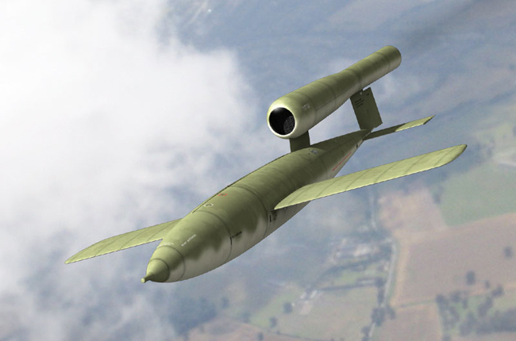

FOGUETE V1
Por:Bruno Rendoki
Começaremos com um dos primeiros Mísseis de longo alcance ele foi criado para atingir a capital da Englatera a cidade de Londres com a finalidade de causar terror aos britanicos e forçalos a se render e parar de apoiar os estados unidos as operaçoes deles comesaram augumas semanas depois do dia-D